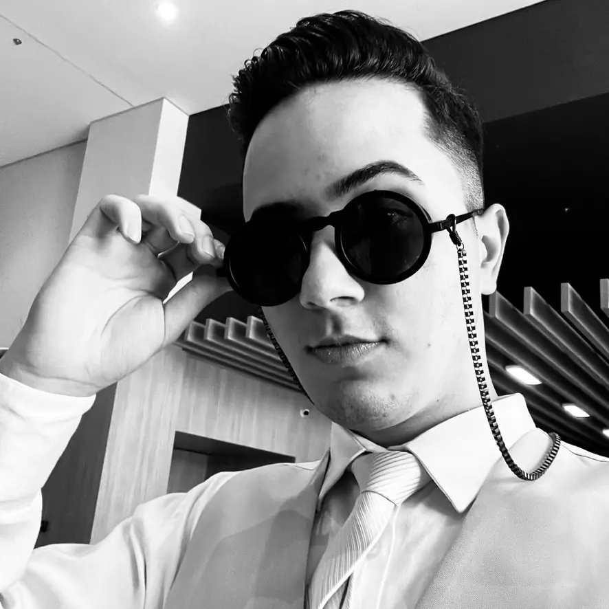

<template>
  <header>
    
    <h1>Paulo Queiroz</h1>
    <nav>
      <ul>
        <li><a href="index.html">Página inicial</a></li>
        <li><a href="#about">Sobre</a></li>
        <li><a href="portfolio.html">Portfólio</a></li>
        <li><a href="#contact">Contato</a></li>
      </ul>
    </nav>
  </header>
  <style>
    * {
      color: var(--foreground);
    }

    header {
      display: flex;
      flex-direction: row;
      align-items: center;

      padding: 1rem 1.5rem;

      gap: 2rem;

      background: var(--section-background);
    }

    img {
      width: 70px;
      height: 70px;
      border-radius: 50%;
    }

    h1 {
      margin: 0;
      text-transform: uppercase;
      font-size: 1.2rem;
      font-weight: 900;
    }

    nav {
      margin-left: auto;
    }

    ul {
      list-style-type: none;
      margin: 0;
      padding: 0;

      display: flex;
      flex-direction: row;
      align-items: center;

      gap: 3rem;
    }

    a {
      text-decoration: none;
      color: black;
      background: white;
      padding: 0rem 1rem;
      border-radius: 2rem;
    }
  </style>
</template>
